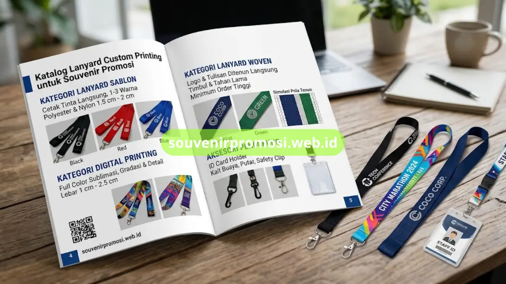
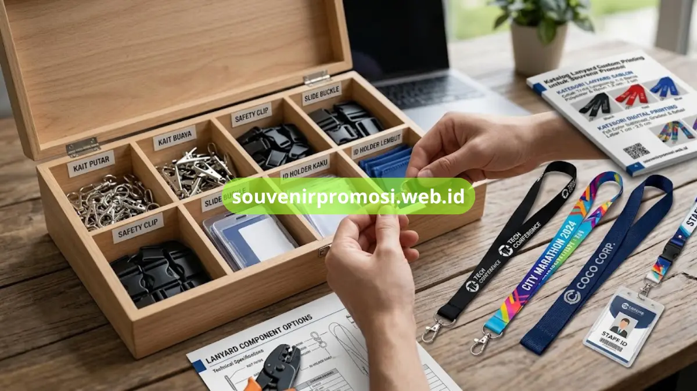

Katalog lanyard custom printing untuk souvenir promosi adalah kumpulan produk lanyard yang dikelompokkan berdasarkan teknik cetak, bahan, dan aksesori, sehingga memudahkan calon pemesan membandingkan pilihan sebelum menentukan produk yang sesuai.
Katalog ini disusun agar tim procurement dan HRD dapat langsung memilih kategori produk tanpa perlu berkonsultasi berulang kali sebelum mengajukan permintaan penawaran harga.
Poin Penting
- Katalog lanyard custom printing terbagi ke dalam kategori sablon, digital printing, dan woven.
- Setiap kategori memiliki rentang harga dan lebar tali yang berbeda, disesuaikan kompleksitas cetakan.
- Produk dalam katalog dapat dikombinasikan dengan aksesori tambahan seperti id card holder dan kait.
- Pemesanan katalog dapat dilakukan langsung melalui website souvenirpromosi.web.id.
Daftar Isi
Kategori Lanyard Sablon dalam Katalog
Kategori lanyard sablon dalam katalog mencakup produk dengan proses cetak tinta langsung pada permukaan tali, tersedia dalam pilihan warna dasar polyester dan nylon dengan lebar tali standar 1,5 cm sampai 2 cm.
Produk pada kategori ini umumnya menampilkan spesifikasi jumlah warna cetak antara satu hingga tiga warna, sesuai batas teknis sablon konvensional. Katalog mencantumkan pilihan warna dasar tali seperti hitam, merah, biru, dan kuning yang dapat dikombinasikan dengan warna tinta cetak sesuai identitas brand pemesan. Kategori ini cocok dimasukkan ke daftar belanja souvenir promosi dengan kebutuhan logo sederhana dan volume pemesanan menengah hingga besar.
Spesifikasi Bahan pada Kategori Sablon
Bahan yang tersedia pada kategori sablon dalam katalog meliputi polyester standar dengan tekstur agak kasar dan nylon dengan permukaan lebih halus dan mengkilap, masing-masing memberikan hasil cetak sablon yang sedikit berbeda dari sisi ketajaman warna.
Polyester umumnya dipilih karena harganya lebih terjangkau dan cocok untuk pemesanan dalam jumlah besar, sementara nylon lebih sering dipilih ketika pemesan menginginkan tampilan lanyard yang tampak lebih premium meski tetap menggunakan teknik sablon.
Kategori Lanyard Digital Printing dalam Katalog
Kategori lanyard digital printing dalam katalog menampilkan produk dengan hasil cetak full color menggunakan metode sublimasi, cocok untuk logo bergradasi, ilustrasi detail, maupun kombinasi banyak warna yang tidak dapat dicetak dengan sablon konvensional.
Katalog kategori ini biasanya mencantumkan contoh hasil cetak logo pada berbagai bahan dasar, disertai keterangan resolusi desain minimal yang disarankan agar hasil akhir tetap tajam. Produk dalam kategori ini juga umumnya menyertakan opsi ukuran lebar tali yang lebih beragam dibanding kategori sablon.
Pilihan Ukuran dan Lebar Tali Digital Printing
Pilihan ukuran dan lebar tali pada kategori digital printing dalam katalog umumnya berkisar antara 1 cm untuk model slim hingga 2,5 cm untuk model standar korporat, disesuaikan dengan preferensi tampilan dan kenyamanan pemakaian.
Lebar tali yang lebih besar memberikan ruang cetak logo yang lebih luas sehingga detail desain dapat ditampilkan lebih jelas, sementara model slim lebih sering dipilih untuk kesan lanyard yang ringkas dan modern.
Kategori Lanyard Woven dalam Katalog
Kategori lanyard woven dalam katalog menampilkan produk dengan logo dan tulisan yang ditenun langsung ke struktur kain, memberikan tampilan timbul yang lebih tahan lama dibanding hasil cetak permukaan biasa.
Produk pada kategori ini biasanya dicantumkan bersama keterangan minimum order yang lebih tinggi mengingat proses produksinya membutuhkan setup tenun khusus. Katalog kategori woven umumnya juga menyertakan simulasi pola tenun agar pemesan dapat melihat gambaran hasil akhir sebelum produksi massal dilakukan.
Kategori Aksesori Pendukung Lanyard dalam Katalog
Kategori aksesori pendukung lanyard dalam katalog mencakup id card holder, kait buaya, kait putar, dan breakaway safety clip yang dapat dipasangkan dengan produk lanyard dari kategori mana pun.

Setiap jenis aksesori dalam katalog dicantumkan bersama keterangan fungsi dan skenario pemakaiannya, sehingga pemesan dapat memilih kombinasi yang paling sesuai dengan kebutuhan operasional, baik untuk acara satu hari maupun penggunaan identitas jangka panjang oleh karyawan.
Katalog lanyard custom printing untuk souvenir promosi memudahkan tim procurement dan HRD membandingkan kategori sablon, digital printing, woven, hingga aksesori pendukung sebelum menentukan produk yang paling sesuai dengan kebutuhan acara maupun identitas karyawan perusahaan.
Lihat katalog lengkap dan ajukan permintaan penawaran harga langsung melalui souvenirpromosi.web.id, atau hubungi tim kami untuk konsultasi kategori produk yang paling sesuai dengan kebutuhan Anda.